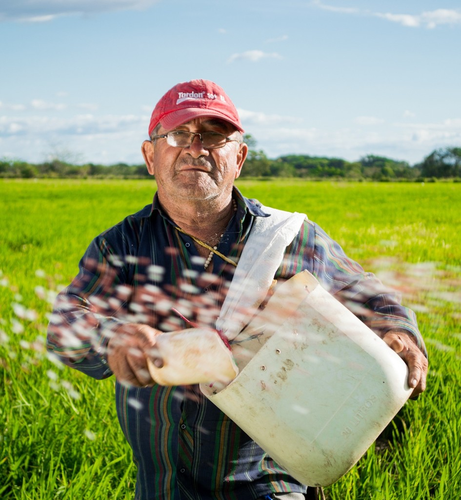
When our equipment breaks down, reaching the dealer takes too long, so we often switch to brands with better support.
At Gripp, a B2B SaaS company, we expanded into the shortline OEM manufacturing market to reach a new customer segment beyond agriculture. I led the end-to-end design of a multi-platform product that helped manufacturers capture field data, streamline internal collaboration and aftermarket workflows, and supported 30% user growth.
Client Growth
~ 30%
Projected User Satisfaction
4.5/5
Client Satisfaction Rate
5/5
Context
Field technicians could scan QR codes to report issues, complete tasks, and access equipment records. As Gripp expanded into manufacturing, teams needed more than task management. They needed a shared view of assets, activities, and people to coordinate work seamlessly across desktop and mobile.

Problem
In agriculture, word of mouth drives growth. Manufacturers rely on trusted relationships with farmers to earn repeat business and referrals. But when equipment breaks down, slow communication and fragmented information lead to poor after-sales support, causing customers to lose trust and switch brands.

When our equipment breaks down, reaching the dealer takes too long, so we often switch to brands with better support.
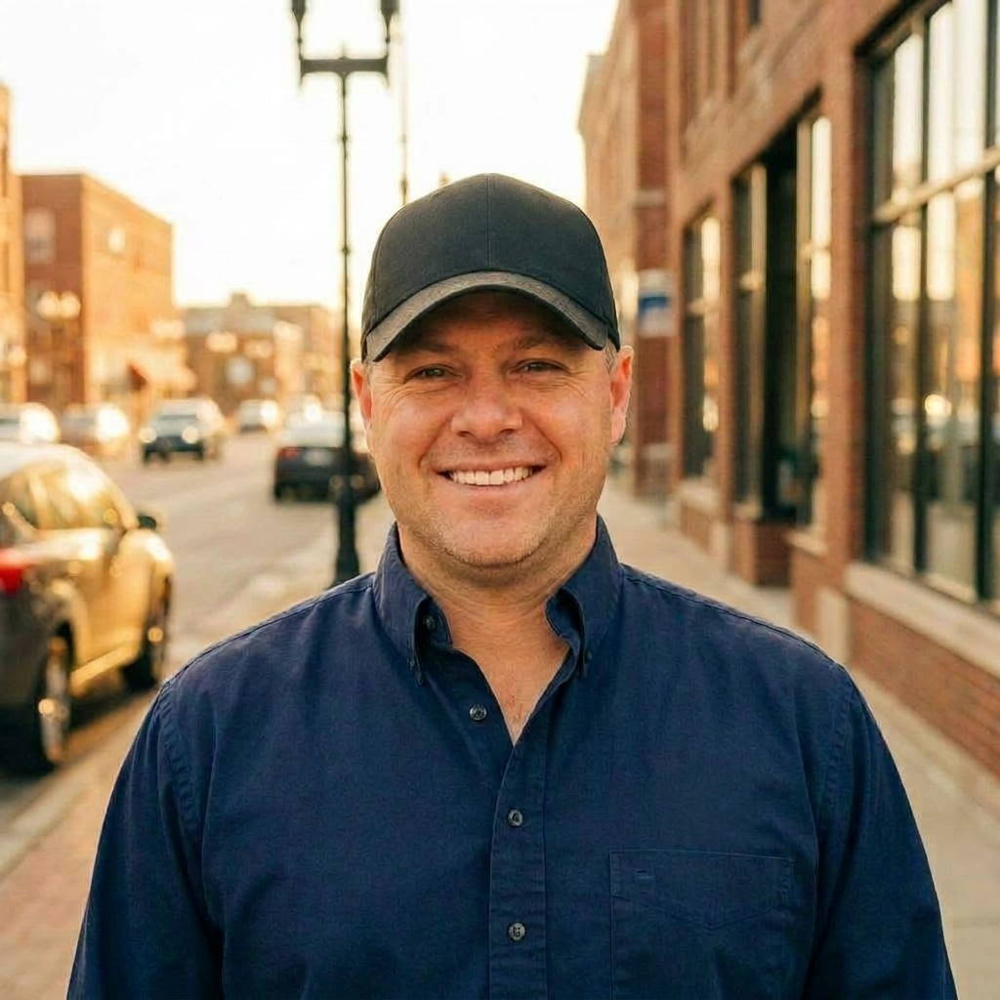
I want to build strong relationships with my customers, but I only hear from them when something goes wrong.
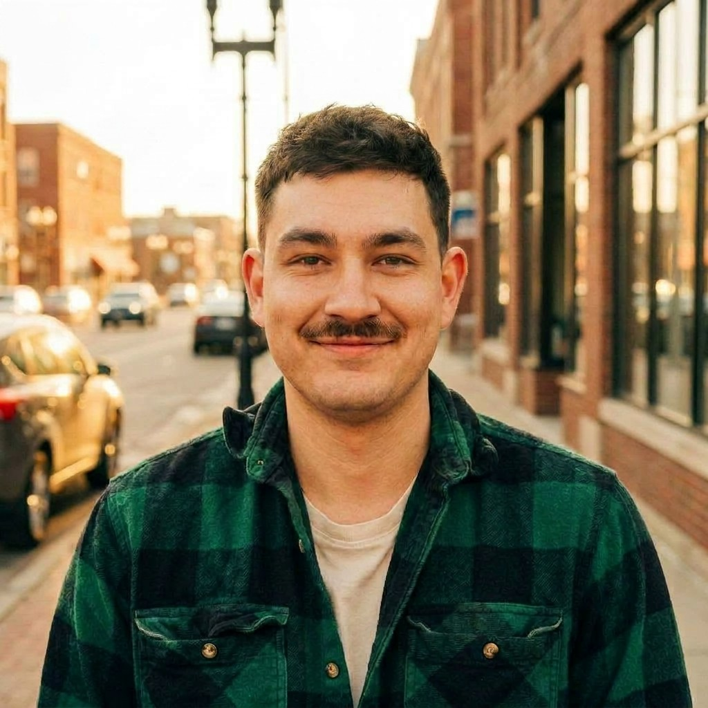
By the time I arrive, the problem has changed, and I have to go back and forth to figure out what's wrong.
I manage customer data, so it worries me when they contact other staff, not me. It becomes hard to track afterward.
Interviews
We interviewed three key client companies, speaking with a total of twelve drivers and operators to understand their workflows and past experiences. Our questions focused on how they choose which manufacturer brand to work with, how they use and maintain the equipment, their overall experience with the manufacturer, and any challenges they encounter while operating the machines.
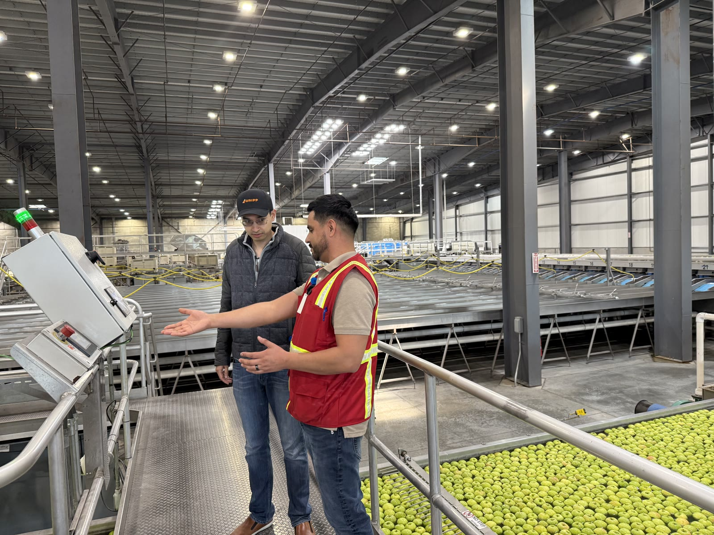
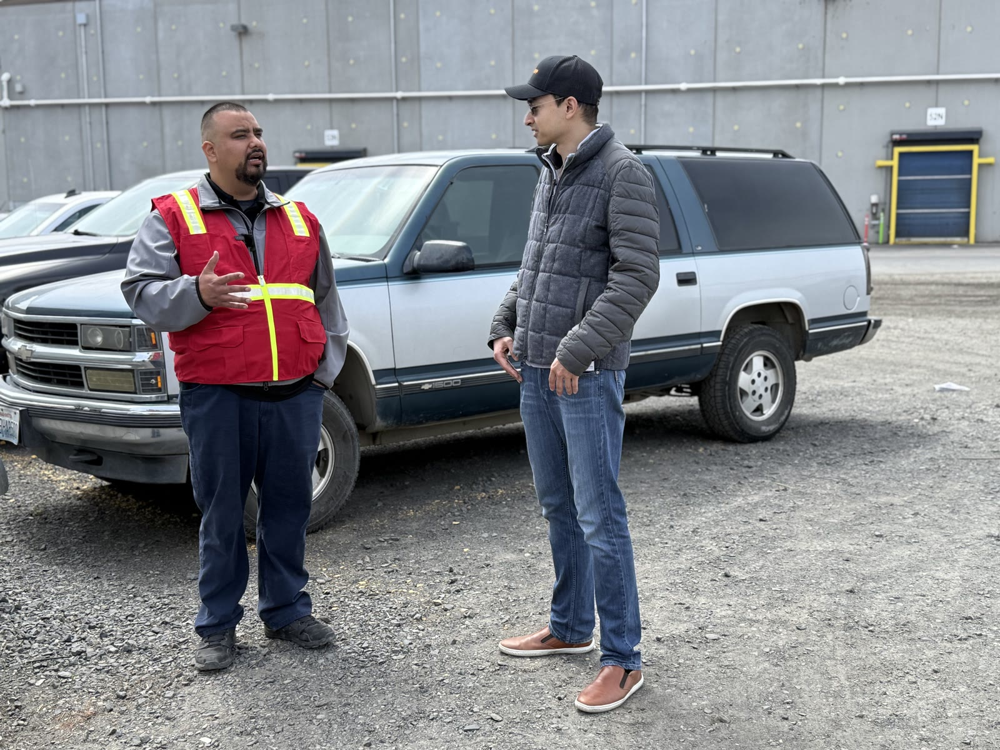
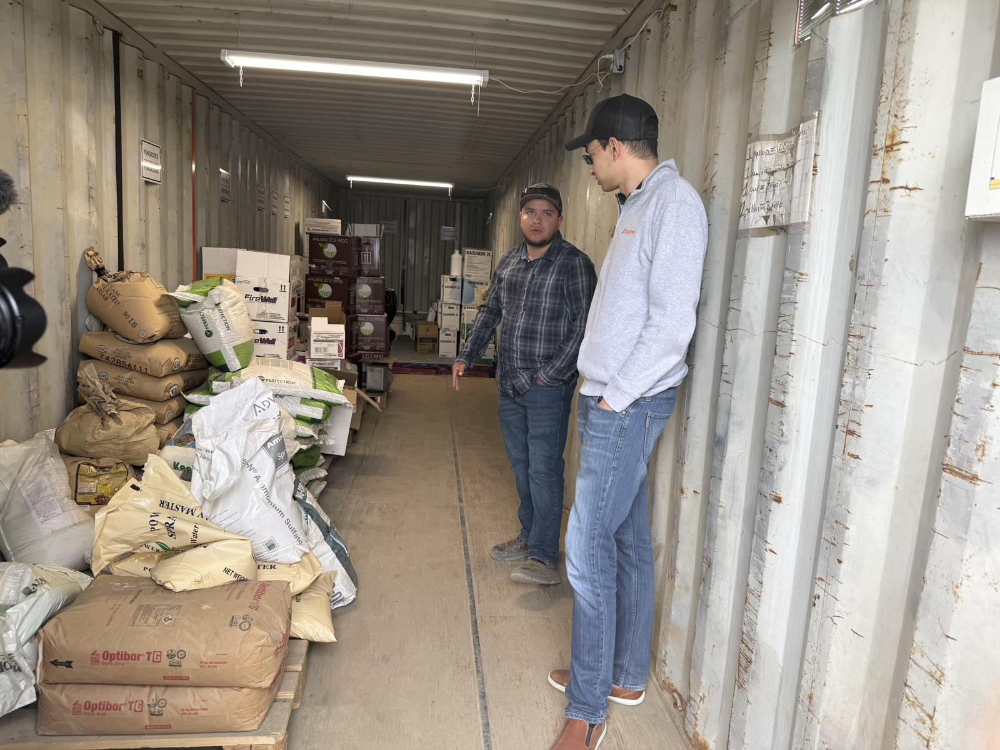
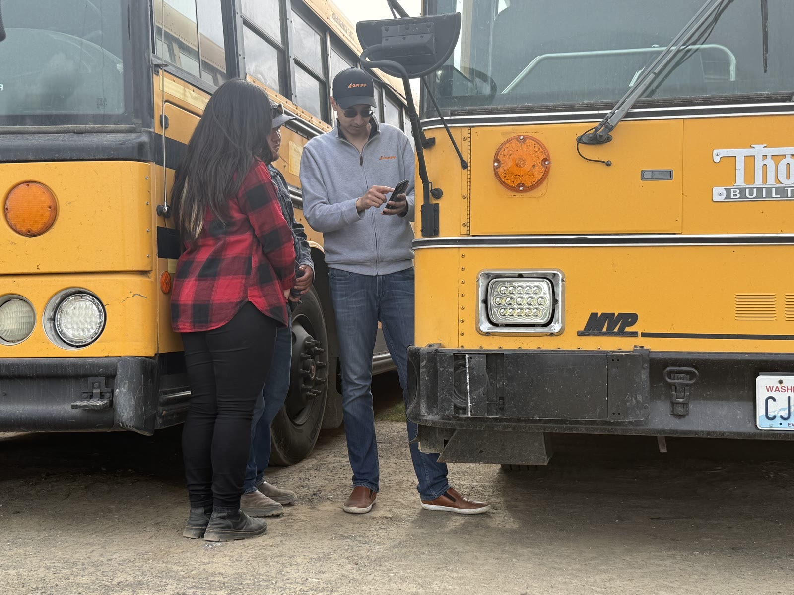
Users lack a clear record of part history and service details, making troubleshooting slow and reducing confidence in equipment reliability.
Most users rely on memory to track service schedules, leading to missed maintenance and unexpected breakdowns. They need clearer reminders and a simpler way to manage tasks.
Users often wait long periods for dealer or support responses, slowing repairs and increasing downtime. Faster, more consistent communication is urgently needed.
Interview - Service Blueprint
After interviewing Walkabout Mother Bins and observing five other manufacturers, I created a service blueprint to map how departments work together from browsing and ordering through customer support. I found that:

Different departments track the same customer in their own ways. This leads to repeated conversations, wasted time, and unreliable data.
A customer calls for help, the issue bounces from service to manager to mechanic, then back to the customer for clarification. All this back-and-forth wastes valuable time.
Manufacturers provide guidebooks to help customers maintain the machine, but after that it depends on how the customers take care of it. They only reach out to the manufacturers when problems arise.
Ideation
Building on these research insights, I used AI-assisted ideation to identify reusable workflows and shape a scalable product strategy before moving into design.

Comparative workflow analysis across manufacturers to identify operational differences and shared system needs.

Feature brainstorming and sitemap design to structure the system with scalable, reusable components.

User flow mapping to ensure consistency, full coverage, and no gaps across key workflows.
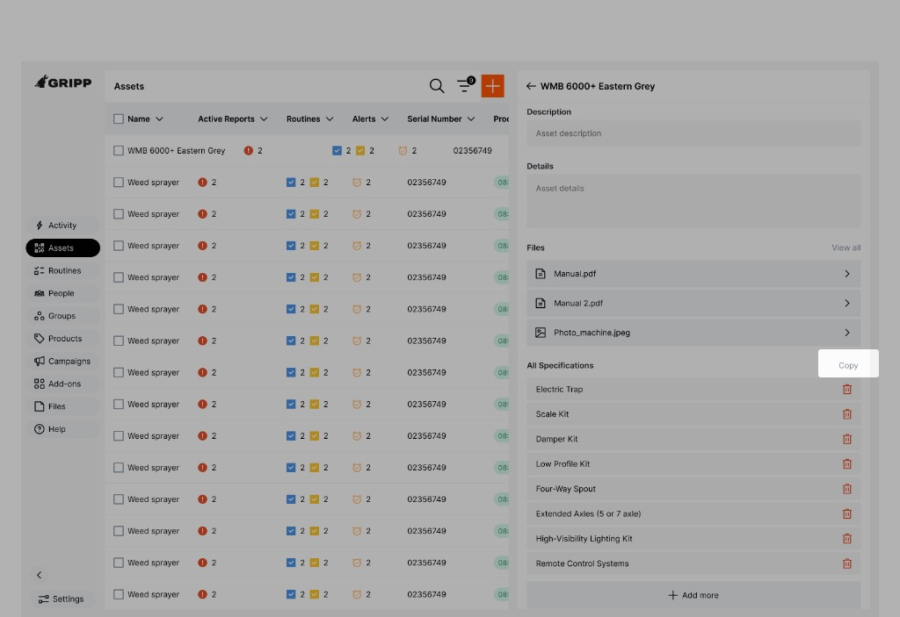
Before
I added specification duplication because many products share similar specs. Users can now duplicate specifications from existing products instead of recreating them from scratch.
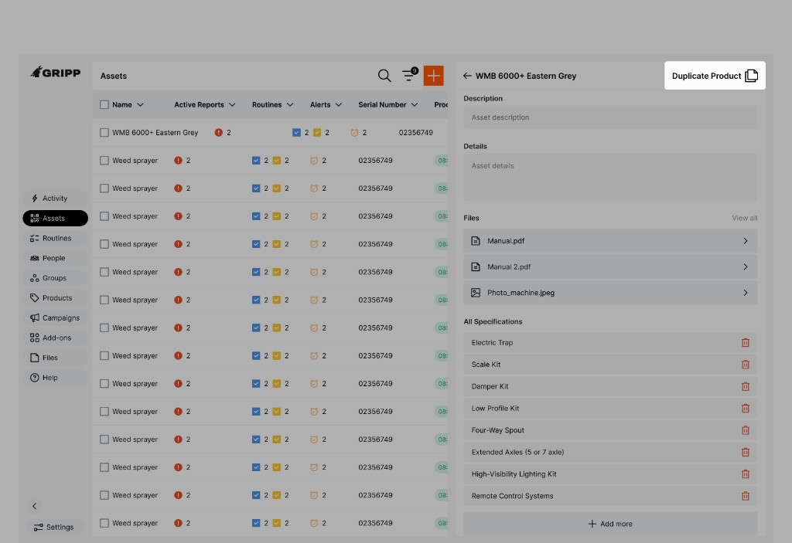
After
However, clients wanted to duplicate entire products, not just specifications. Since many products share similar details, product-level duplication would significantly reduce setup effort.
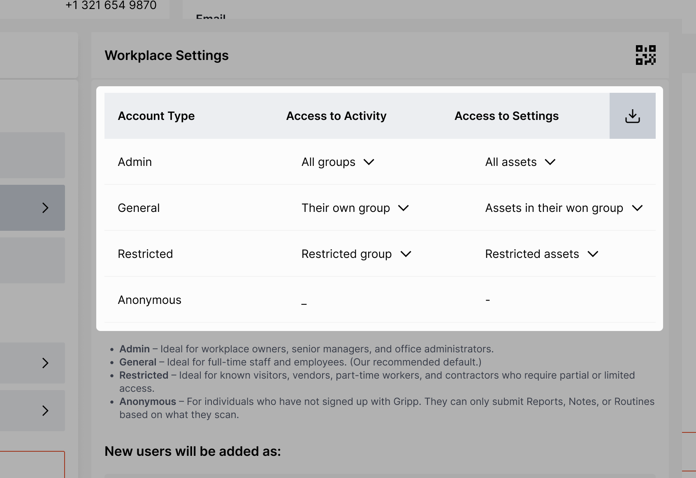
Before
I noticed factory teams spent time typing serial numbers manually. I proposed a scanning feature using the device camera to auto-fill them. The team validated the value, but technical limitations pushed it to a future release.
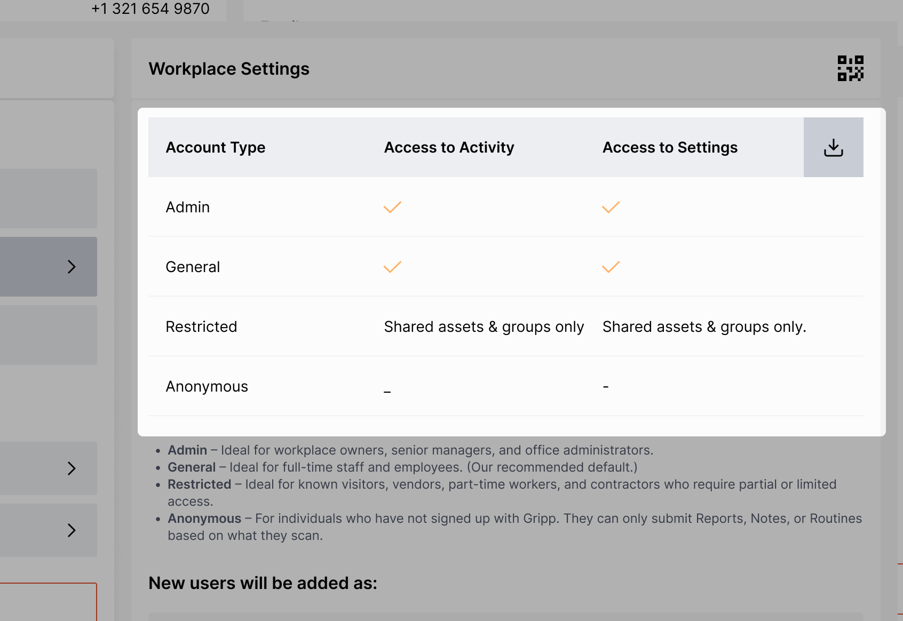
After
When reviewing the user journey, I noticed that asset setup is one of the easiest steps for clients, but serial numbers are usually long and mixed with numbers and letters. If we don’t include text recognition in the MVP, clients may give up on using Gripp.
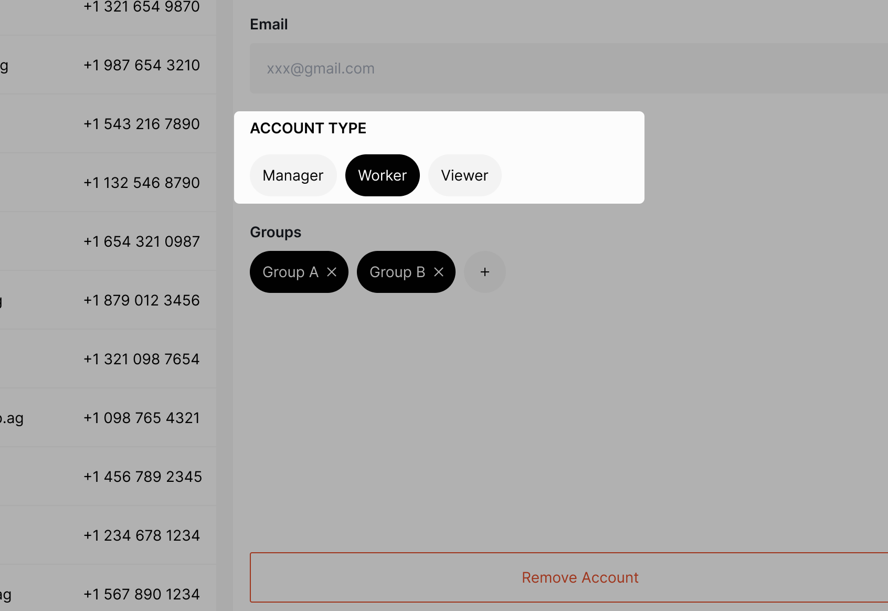
Before
Originally, I planned for customers to enter their information right after scanning the asset and before activating the warranty, so manufacturers could collect customer data upfront.
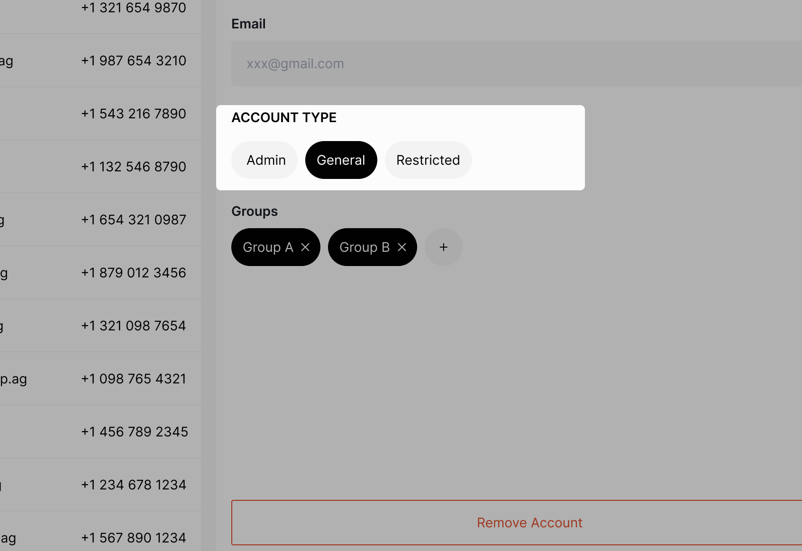
After
Sales noticed that customers were unsure about the app’s capabilities and weren’t signing up. We updated the flow so customers can preview the app first, with key features unlocked after they complete warranty registration.
Reflection
What I've learned from this project and my time at Gripp is that early-stage product design rarely comes with perfect data or clear answers. Instead of chasing certainty, I've learned to focus on shaping direction by exploring options, understanding trade-offs, and being clear about what's backed by data and what still needs validation. Ambiguity used to feel uncomfortable, but now I see it as part of the material I work with. It's an opportunity to organize the unknowns, visualize possibilities, guide the team forward, and sometimes uncover opportunities we didn't expect.